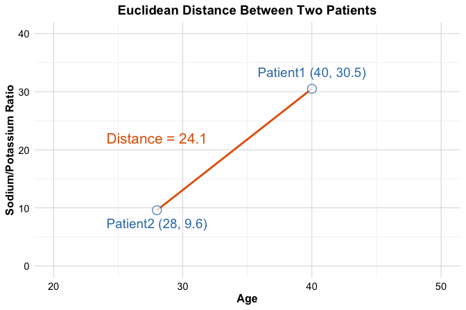
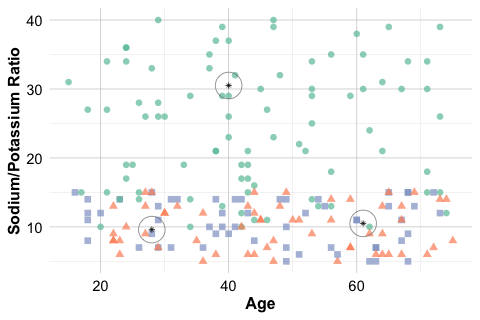
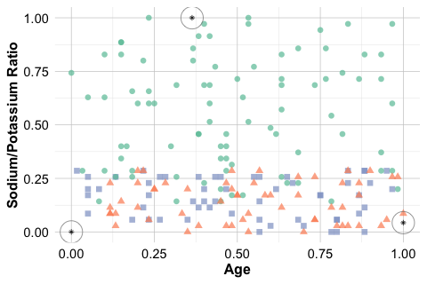

7 Classification Using k-Nearest Neighbors
Tell me who your friends are, and I will tell you who you are.
Classification is a foundational task in machine learning. It enables algorithms to assign observations to predefined categories based on patterns learned from labeled data. Whether we filter spam emails or predict customer churn, classification models support decisions in many real-world systems. In this chapter, we introduce classification as a supervised learning problem and focus on a method that is both intuitive and practical for a first encounter with predictive modeling.
This chapter marks the start of Step 5 (Modeling) in the Data Science Workflow (Figure 2.3). In earlier chapters, we cleaned and explored data, developed statistical reasoning, and prepared datasets for modeling. We now turn to building predictive models and evaluating how well they generalize. This chapter connects directly to Step 4 (Data Setup for Modeling) in Chapter 6, where we partitioned datasets and applied preprocessing choices such as encoding and scaling to support leakage-free evaluation.
What This Chapter Covers
We begin by defining classification and contrasting it with regression. We then introduce k-Nearest Neighbors (kNN), a distance-based method that predicts the class of a new observation by examining the labels of its closest neighbors in the training set. Because kNN relies on distance calculations, we also show why preprocessing decisions, particularly encoding and feature scaling, are essential for meaningful comparisons.
To demonstrate the complete workflow, we apply kNN to the churn dataset, where the goal is to predict whether a customer will discontinue a service. We work through data setup, selection of the hyperparameter \(k\), model fitting in R, and performance evaluation. The case study provides a reusable template for applying kNN to other classification problems.
By the end of this chapter, readers will understand how classification models generate predictions, how kNN translates similarity into a decision rule, and how to implement and evaluate kNN in a principled way.
7.1 Classification
How do email applications filter spam or banks detect fraudulent transactions in real time? Such systems rely on classification, a core task in supervised machine learning that assigns observations to one of several predefined categories based on observed patterns in labeled data.
In a classification problem, the goal is to predict a categorical outcome. For example, given customer attributes, a model may predict whether a customer is likely to churn. This differs from regression, where the outcome is numeric, such as income or house price.
The outcome variable in classification, often called the class or label, can take different forms. In binary classification, the outcome has two possible categories, such as churn versus no churn. In multiclass classification, the outcome includes more than two categories, such as identifying different object types in image recognition.
Classification plays a central role in many application domains. It supports decision-making in areas such as fraud detection, customer retention, medical diagnosis, and content recommendation. Across these settings, the common objective is to translate structured input data into meaningful, actionable predictions.
How Classification Works
Most classification methods follow a common conceptual framework. During the training stage, the model learns relationships between input features and known class labels using a labeled dataset. During the prediction stage, the trained model assigns class labels to new observations based on the learned patterns.
An effective classification model does more than reproduce the training data. It captures systematic structure that allows it to generalize, meaning that it produces accurate predictions for new observations not seen during training. This ability to generalize is a defining property of supervised learning and a key criterion for evaluating classification models.
As we will see in this chapter, not all classifiers implement these stages in the same way. In particular, k-Nearest Neighbors differs from many models by postponing most computation until predictions are made, an idea we examine in detail in the following sections.
Classification Algorithms and the Role of kNN
A wide range of algorithms can be used for classification. Each method is suited to different data characteristics and modeling objectives, and no single approach performs best in all settings. Common classification algorithms include:
k-Nearest Neighbors (kNN) assigns class labels based on the closest observations in the training data and is the focus of this chapter.
Naive Bayes is a probabilistic classifier that performs well in high-dimensional settings such as text analysis (see Chapter 9).
Logistic Regression models binary outcomes and offers clear interpretability of predictor effects (see Chapter 10).
Decision Trees and Random Forests capture nonlinear relationships and feature interactions (see Chapter 11).
Neural Networks are high-capacity models designed for complex or unstructured data (see Chapter 12).
The choice of a classification algorithm depends on factors such as dataset size, feature types, interpretability requirements, and computational constraints. For small to medium-sized tabular datasets, or when model transparency is important, simpler methods such as kNN or logistic regression are often appropriate. For large-scale or highly complex problems, more flexible models may offer superior performance.
Among these methods, kNN is particularly useful as an introductory classifier. It makes minimal assumptions about the underlying data and relies directly on the concept of similarity between observations. For this reason, kNN is often used as a baseline model that helps assess the intrinsic difficulty of a classification task and highlights the importance of preprocessing choices such as encoding and feature scaling.
In the sections that follow, we examine how kNN measures similarity, how the number of neighbors influences its behavior, and how the algorithm can be implemented and evaluated using the churn dataset in R.
7.2 How k-Nearest Neighbors Works
Imagine making a decision by consulting a small group of peers who have faced similar situations. The k-Nearest Neighbors (kNN) algorithm follows a comparable principle: it predicts outcomes based on the most similar observations observed in the past. This reliance on similarity makes kNN one of the most intuitive methods in classification.
Unlike many classification algorithms, kNN does not estimate model parameters during a dedicated training stage. Instead, it stores the training data and defers most computation until a prediction is required, a strategy commonly referred to as lazy learning. When a new observation is presented, the algorithm computes its distance to all training points, identifies the k closest neighbors, and assigns the class label that occurs most frequently among them. The value of k, which determines how many neighbors are considered, plays a central role in shaping the model’s behavior.
Because kNN shifts computation from training to prediction, it avoids explicit model fitting but incurs higher computational cost when classifying new observations. This trade-off is an important practical consideration when working with larger datasets.
How Does kNN Classify a New Observation?
To classify a new observation, the kNN algorithm computes its distance to each point in the training set, typically using Euclidean distance. The algorithm then selects the k nearest neighbors and assigns the class label that appears most frequently among them.
Figure 7.1 illustrates this idea using a simple two-dimensional dataset with two classes and a new data point to be classified. When k is small, the prediction depends on a limited number of nearby points. When k is larger, more neighbors influence the decision, potentially leading to a different classification outcome.
For \(k = 3\), the majority of the nearest neighbors belong to one class, resulting in that class being assigned to the new observation.
For \(k = 6\), a different class becomes dominant among the nearest neighbors, leading to a different predicted label.
This example illustrates how the choice of k directly influences the classification result. Smaller values of k emphasize local structure and may be sensitive to noise, while larger values incorporate broader neighborhood information and produce smoother decision boundaries. Selecting an appropriate value of k is therefore essential, a topic we examine in more detail later in this chapter.
Strengths and Limitations of kNN
The kNN algorithm is valued for its simplicity and transparency. Because predictions are based directly on nearby observations, the reasoning behind each classification is easy to interpret. This makes kNN a natural starting point for understanding classification and a useful baseline for comparison with more complex models.
At the same time, kNN has important limitations. The algorithm is sensitive to irrelevant or noisy features, which can distort distance calculations and degrade performance. Since distances are computed to all training observations at prediction time, kNN can also become computationally expensive as the size of the training set grows.
The effectiveness of kNN therefore depends strongly on careful data preparation. Feature selection, appropriate scaling, and outlier handling all play a critical role in ensuring that distance calculations reflect meaningful structure in the data. These considerations motivate the preprocessing steps discussed in the following sections.
7.3 A Simple Example of kNN Classification
To illustrate how kNN operates in practice, we consider a simplified classification example involving drug prescriptions. We use a synthetic dataset of 200 patients that records each patient’s age, sodium-to-potassium (Na/K) ratio, and prescribed drug type. Although artificially generated, the dataset reflects patterns commonly encountered in clinical decision settings. It is available in the liver package under the name drug. Figure 7.2 shows the distribution of patients in a two-dimensional feature space, where each point represents a patient and the drug type is indicated by color and shape.
Suppose three new patients arrive at the clinic, and we must determine which drug is most suitable for each based on age and Na/K ratio. Patient 1 is 40 years old with a Na/K ratio of 30.5. Patient 2 is 28 years old with a ratio of 9.6, and Patient 3 is 61 years old with a ratio of 10.5. These patients are shown as stars in Figure 7.2, together with their three nearest neighbors.

For Patient 1, the classification is straightforward. The patient lies well within a cluster of training observations that share the same drug label, and all nearest neighbors agree on the assigned class. In such cases, kNN produces a stable and confident prediction.
For Patient 2, the predicted class depends on the chosen value of k, as illustrated in the left panel of Figure 7.3. When \(k = 1\), the prediction is determined by a single neighbor. When \(k = 2\), the nearest neighbors belong to different classes, resulting in a tie. At \(k = 3\), a majority emerges and the prediction stabilizes. This example illustrates how small values of k can lead to unstable decisions and how increasing k can reduce sensitivity to individual observations.
For Patient 3, shown in the right panel of Figure 7.3, classification is inherently uncertain. The patient lies close to the boundary between multiple clusters, and the nearest neighbors represent different drug types. Even with \(k = 3\), no clear majority exists. Small changes in the patient’s features could shift the balance toward a different class. This behavior highlights a key limitation of kNN: predictions near class boundaries can be highly sensitive to both feature values and the choice of k.
Practice: Using Figure 7.2, consider how kNN might classify a 50-year-old patient with a sodium-to-potassium ratio of 10. How would your reasoning change as the value of \(k\) increases?
This example illustrates several important aspects of kNN. The value of k influences the stability of predictions, observations near class boundaries are inherently harder to classify, and distance-based decisions are sensitive to the geometry of the feature space. These insights motivate the next sections, where we formalize how similarity is measured and examine principled strategies for choosing the value of k.
7.4 How Does kNN Measure Similarity?
Suppose you are a physician comparing two patients based on age and sodium-to-potassium (Na/K) ratio. One patient is 40 years old with a Na/K ratio of 30.5, and the other is 28 years old with a ratio of 9.6. Which of these patients is more similar to a new case you are evaluating?
In the kNN algorithm, classifying a new observation depends on identifying the most similar records in the training set. While similarity may seem intuitive, machine learning requires a precise definition. Specifically, similarity is quantified using a distance metric, which determines how close two observations are in a multidimensional feature space. These distances govern which records are chosen as neighbors and, ultimately, how a new observation is classified.
In this medical scenario, similarity is measured by comparing numerical features such as age and lab values. The smaller the computed distance between two patients, the more similar they are assumed to be, and the more influence they have on classification. Since kNN relies on the assumption that nearby points tend to share the same class label, choosing an appropriate distance metric is essential for accurate predictions.
7.4.1 Euclidean Distance
A widely used measure of similarity in kNN is Euclidean distance, which corresponds to the straight-line, or “as-the-crow-flies,” distance between two points. It is intuitive, easy to compute, and well-suited to numerical data with comparable scales.
Mathematically, the Euclidean distance between two points \(x\) and \(y\) in \(n\)-dimensional space is given by: \[ \text{dist}(x, y) = \sqrt{(x_1 - y_1)^2 + (x_2 - y_2)^2 + \ldots + (x_n - y_n)^2}, \] where \(x = (x_1, x_2, \ldots, x_n)\) and \(y = (y_1, y_2, \ldots, y_n)\) are the feature vectors.
For example, suppose we want to compute the Euclidean distance between two new patients from the previous section, using their age and sodium-to-potassium (Na/K) ratio. Patient 1 is 40 years old with a Na/K ratio of 30.5, and Patient 2 is 28 years old with a Na/K ratio of 9.6. The Euclidean distance between these two patients is visualized in Figure 7.4 in a two-dimensional feature space, where each axis represents one of the features (age and Na/K ratio). The line connecting Patient 1 \((40, 30.5)\) and Patient 2 \((28, 9.6)\) represents their Euclidean distance: \[ \text{dist}(x, y) = \sqrt{(40 - 28)^2 + (30.5 - 9.6)^2} = \sqrt{144 + 436.81} = 24.11 \]

This value quantifies how dissimilar the patients are in the two-dimensional feature space, and it plays a key role in determining how the new patient would be classified by kNN.
Although other distance metrics exist, such as Manhattan distance, Hamming distance, or cosine similarity, Euclidean distance is the most commonly used in practice, especially when working with numerical features. Its geometric interpretation is intuitive and it works well when variables are measured on similar scales. In more specialized contexts, other distance metrics may be more appropriate depending on the structure of the data or the application domain. Readers interested in alternative metrics can explore resources such as the proxy package in R or consult advanced machine learning texts.
In the next section, we will examine how preprocessing steps like feature scaling ensure that Euclidean distance yields meaningful and balanced comparisons across features.
7.5 Data Setup for kNN
The performance of the kNN algorithm is highly sensitive to how the data is set up. Because kNN relies on distance calculations to assess similarity between observations, careful setup of the feature space is essential. Two key steps—encoding categorical variables and feature scaling—ensure that both categorical and numerical features are properly represented in these computations. These tasks belong to the Data Setup for Modeling phase introduced in Chapter 6 (see Figure 2.3).
To make this idea concrete, imagine working with patient data that includes age, sodium-to-potassium (Na/K) ratio, marital status, and education level. While age and Na/K ratio are numeric, marital status and education are categorical. To prepare these features for a distance-based model, we must convert them into numerical form in a way that preserves their original meaning.
In most tabular datasets (such as the churn and bank datasets introduced earlier), features include a mix of categorical and numerical variables. A recommended approach is to first encode the categorical features into numeric format and then scale all numerical features. This sequence ensures that distance calculations occur on a unified numerical scale without introducing artificial distortions.
The appropriate encoding strategy depends on whether a variable is binary, nominal, or ordinal. These techniques were detailed in Chapter 6: general guidance in Section 6.7, ordinal handling in Section 6.8, and one-hot encoding in Section 6.9.
Once categorical variables have been encoded, all numerical features—both original and derived—should be scaled so that they contribute fairly to similarity calculations. Even after encoding, features can differ widely in range. For example, age might vary from 20 to 70, while income could range from 20,000 to 150,000. Without proper scaling, features with larger magnitudes may dominate the distance computation, leading to biased neighbor selection.
Two widely used scaling methods address this issue: min–max scaling (introduced in Section 6.11) and z-score scaling (introduced in Section 6.12). Min–max scaling rescales values to a fixed range, typically \([0, 1]\), ensuring that all features contribute on the same numerical scale. Z-score scaling centers features at zero and scales them by their standard deviation, making it preferable when features have different units or contain outliers.
Min–max scaling is generally suitable when feature values are bounded and preserving relative distances is important. Z-score scaling is better when features are measured in different units or affected by outliers, as it reduces the influence of extreme values.
Before moving on, it is essential to apply scaling correctly, only after the dataset has been partitioned, to avoid data leakage. The next subsection explains this principle in detail.
7.5.1 Preventing Data Leakage during Scaling
Scaling should be performed after splitting the dataset into training and test sets. This prevents data leakage, a common pitfall in predictive modeling where information from the test set inadvertently influences the model during training. Specifically, parameters such as the mean, standard deviation, minimum, and maximum must be computed only from the training data and then applied to scale both the training and test sets.
The comparison in Figure 7.5 visualizes the importance of applying scaling correctly. The middle panel shows proper scaling using training-derived parameters; the right panel shows the distortion caused by scaling the test data independently.
To illustrate, consider the drug classification task from earlier. Suppose age and Na/K ratio are the two predictors. The following code demonstrates both correct and incorrect approaches to scaling using the minmax() function from the liver package:
library(liver)
# Correct scaling: Apply train-derived parameters to test data
train_scaled = minmax(train_set, col = c("age", "ratio"))
test_scaled = minmax(test_set, col = c("age", "ratio"),
min = c(min(train_set$age), min(train_set$ratio)),
max = c(max(train_set$age), max(train_set$ratio))
)
# Incorrect scaling: Apply separate scaling to test set
train_scaled_wrongly = minmax(train_set, col = c("age", "ratio"))
test_scaled_wrongly = minmax(test_set , col = c("age", "ratio"))



Note that scaling parameters should always be derived from the training data and then applied consistently to both the training and test sets. Failing to do so can result in incompatible feature spaces, leading the kNN algorithm to identify misleading neighbors and produce unreliable predictions.
With similarity measurement and data preparation steps now complete, the next task is to determine an appropriate value of \(k\). The following section examines how this crucial hyperparameter influences the behavior and performance of the kNN algorithm.
7.6 Choosing the Right Value of k in kNN
Imagine you are new to a city and looking for a good coffee shop. If you ask just one person, you might get a recommendation based on their personal taste, which may differ from yours. If you ask too many people, you could be overwhelmed by conflicting opinions or suggestions that average out to a generic option. The sweet spot is asking a few individuals whose preferences align with your own. Similarly, in the kNN algorithm, selecting an appropriate number of neighbors (\(k\)) requires balancing specificity and generalization.
The parameter k, which determines how many nearest neighbors are considered during classification, plays a central role in shaping model performance. There is no universally optimal value for k; the best choice depends on the structure of the dataset and the nature of the classification task. Selecting k involves navigating the trade-off between overfitting and underfitting.
When k is too small, such as \(k = 1\), the model becomes overly sensitive to individual training points. Each new observation is classified based solely on its nearest neighbor, making the model highly reactive to noise and outliers. This often leads to overfitting, where the model performs well on the training data but generalizes poorly to new cases. A small cluster of mislabeled examples, for instance, could disproportionately influence the results.
As k increases, the algorithm includes more neighbors in its classification decisions, smoothing the decision boundary and reducing the influence of noisy observations. However, when k becomes too large, the model may begin to overlook meaningful patterns, leading to underfitting. If k approaches the size of the training set, predictions may default to the majority class label.
To determine a suitable value of k, it is common to evaluate a range of options using a validation set or cross-validation. Performance metrics such as accuracy, precision, recall, and the F1-score can guide this choice. These metrics are discussed in detail in Chapter 8. For simplicity, we focus here on accuracy (also called the success rate), which measures the proportion of correct predictions.
As an example, Figure 7.6 presents the accuracy of the kNN classifier for k values ranging from 1 to 30, generated with the kNN.plot() function from the liver package in R. Accuracy fluctuates as k increases, with the best performance achieved at \(k = 5\), where the algorithm reaches its highest accuracy.
Choosing k is ultimately an empirical process informed by validation and domain knowledge. There is no universal rule, but careful experimentation helps identify a value that generalizes well for the problem at hand. A detailed case study in the following section revisits this example and walks through the complete modeling process.
7.7 Case Study: Predicting Customer Churn with kNN
In this case study, we apply the kNN algorithm to a practical classification problem using the churn dataset from the liver package in R. The goal is to predict whether a customer has churned (yes) or not (no) based on demographic information and service usage patterns. Readers unfamiliar with the dataset are encouraged to review the exploratory analysis in Section 4.3, which provides context and preliminary findings. We begin by inspecting the structure:
library(liver)
data(churn)
str(churn)
'data.frame': 10127 obs. of 21 variables:
$ customer_ID : int 768805383 818770008 713982108 769911858 709106358 713061558 810347208 818906208 710930508 719661558 ...
$ age : int 45 49 51 40 40 44 51 32 37 48 ...
$ gender : Factor w/ 2 levels "female","male": 2 1 2 1 2 2 2 2 2 2 ...
$ education : Factor w/ 7 levels "uneducated","highschool",..: 2 4 4 2 1 4 7 2 1 4 ...
$ marital : Factor w/ 4 levels "married","single",..: 1 2 1 4 1 1 1 4 2 2 ...
$ income : Factor w/ 6 levels "<40K","40K-60K",..: 3 1 4 1 3 2 5 3 3 4 ...
$ card_category : Factor w/ 4 levels "blue","silver",..: 1 1 1 1 1 1 3 2 1 1 ...
$ dependent_count : int 3 5 3 4 3 2 4 0 3 2 ...
$ months_on_book : int 39 44 36 34 21 36 46 27 36 36 ...
$ relationship_count : int 5 6 4 3 5 3 6 2 5 6 ...
$ months_inactive : int 1 1 1 4 1 1 1 2 2 3 ...
$ contacts_count_12 : int 3 2 0 1 0 2 3 2 0 3 ...
$ credit_limit : num 12691 8256 3418 3313 4716 ...
$ revolving_balance : int 777 864 0 2517 0 1247 2264 1396 2517 1677 ...
$ available_credit : num 11914 7392 3418 796 4716 ...
$ transaction_amount_12: int 1144 1291 1887 1171 816 1088 1330 1538 1350 1441 ...
$ transaction_count_12 : int 42 33 20 20 28 24 31 36 24 32 ...
$ ratio_amount_Q4_Q1 : num 1.33 1.54 2.59 1.41 2.17 ...
$ ratio_count_Q4_Q1 : num 1.62 3.71 2.33 2.33 2.5 ...
$ utilization_ratio : num 0.061 0.105 0 0.76 0 0.311 0.066 0.048 0.113 0.144 ...
$ churn : Factor w/ 2 levels "yes","no": 2 2 2 2 2 2 2 2 2 2 ...The dataset is a data frame containing 10127 observations and 20 predictor variables, together with the binary outcome variable churn. Consistent with the earlier analysis in Chapter 4, we exclude customer_ID, which is an identifier, and we remove predictors that are deterministic functions of other credit variables (available_credit and utilization_ratio). Excluding such variables reduces redundancy and helps ensure that distance calculations are not dominated by multiple representations of the same information.
Before proceeding to Step 4 (Data Setup for Modeling) in Chapter 6, we prepare the dataset for modeling. To avoid data leakage (see Section 6.6), preprocessing steps that depend on the data distribution, including imputation and scaling, will be applied after partitioning the dataset into training and test sets. We also ensure that the outcome is coded as a factor with levels no and yes, which is required by several modeling and evaluation functions.
# Ensure outcome coding is consistent
churn$churn <- factor(churn$churn, levels = c("no", "yes"))
# Drop any unused levels
churn <- droplevels(churn)In the remainder of this case study, we proceed step by step: partitioning the data, applying preprocessing after the split to avoid leakage, selecting an appropriate value of \(k\), fitting the model, generating predictions, and evaluating performance. Because kNN is distance-based, each step in data setup directly affects how similarity is measured and, therefore, how predictions are formed.
7.7.1 Data Setup for kNN
To evaluate how well the kNN model generalizes to new observations, we begin by splitting the dataset into training and test sets. This separation provides an unbiased estimate of predictive performance by assessing the model on data not used during training.
We use the partition() function from the liver package to divide the data into an 80% training set and a 20% test set:
data_sets = partition(data = churn, ratio = c(0.8, 0.2), set.seed = 42)
train_set = data_sets$part1
test_set = data_sets$part2
test_labels = test_set$churnThe partition() function performs a random split while preserving the class distribution of the target variable. Readers may verify that the churn rate is similar across both sets (see Section 6.4).
Preprocessing steps such as imputation depend on the data distribution, so they should be applied after partitioning to reduce the risk of data leakage (see Section 6.6). In this case study, we apply the same random imputation strategy separately within each subset after splitting.
library(Hmisc)
set.seed(42)
# Treat "unknown" as missing
train_set[train_set == "unknown"] <- NA
test_set[test_set == "unknown"] <- NA
# Random imputation (applied separately within each set)
train_set$education <- impute(train_set$education, "random")
train_set$income <- impute(train_set$income, "random")
train_set$marital <- impute(train_set$marital, "random")
test_set$education <- impute(test_set$education, "random")
test_set$income <- impute(test_set$income, "random")
test_set$marital <- impute(test_set$marital, "random")
train_set <- droplevels(train_set)
test_set <- droplevels(test_set)Practice: Repartition the
churndataset into a 70% training set and a 30% test set. Apply the same imputation strategy to each subset after splitting and verify that the class distribution ofchurnis preserved across both sets.
Encoding Categorical Features for kNN
Because the kNN algorithm relies on distance calculations between observations, all input features must be numeric. Therefore, categorical variables need to be transformed into numerical representations. In the churn dataset, the variables gender, education, marital, income, and card_category are categorical and require encoding. The one.hot() function from the liver package automates this step by generating binary indicator variables:
categorical_features = c("gender", "education", "marital", "income", "card_category")
train_onehot = one.hot(train_set, cols = categorical_features)
test_onehot = one.hot(test_set, cols = categorical_features)
str(test_onehot)
'data.frame': 2025 obs. of 41 variables:
$ customer_ID : int 713061558 816082233 709327383 806165208 804424383 709029408 788658483 715318008 827111283 720572508 ...
$ age : int 44 35 45 47 63 41 53 55 45 38 ...
$ gender : Factor w/ 2 levels "female","male": 2 2 1 2 2 2 1 1 2 1 ...
$ gender_female : int 0 0 1 0 0 0 1 1 0 1 ...
$ gender_male : int 1 1 0 1 1 1 0 0 1 0 ...
$ education : Factor w/ 6 levels "uneducated","highschool",..: 4 4 4 6 2 4 3 3 4 4 ...
$ education_uneducated : int 0 0 0 0 0 0 0 0 0 0 ...
$ education_highschool : int 0 0 0 0 1 0 0 0 0 0 ...
$ education_college : int 0 0 0 0 0 0 1 1 0 0 ...
$ education_graduate : int 1 1 1 0 0 1 0 0 1 1 ...
$ education_post-graduate: int 0 0 0 0 0 0 0 0 0 0 ...
$ education_doctorate : int 0 0 0 1 0 0 0 0 0 0 ...
$ marital : Factor w/ 3 levels "married","single",..: 1 2 1 3 1 1 1 2 2 2 ...
$ marital_married : int 1 0 1 0 1 1 1 0 0 0 ...
$ marital_single : int 0 1 0 0 0 0 0 1 1 1 ...
$ marital_divorced : int 0 0 0 1 0 0 0 0 0 0 ...
$ income : Factor w/ 5 levels "<40K","40K-60K",..: 2 3 1 3 3 3 1 1 4 5 ...
$ income_<40K : int 0 0 1 0 0 0 1 1 0 0 ...
$ income_40K-60K : int 1 0 0 0 0 0 0 0 0 0 ...
$ income_60K-80K : int 0 1 0 1 1 1 0 0 0 0 ...
$ income_80K-120K : int 0 0 0 0 0 0 0 0 1 0 ...
$ income_>120K : int 0 0 0 0 0 0 0 0 0 1 ...
$ card_category : Factor w/ 4 levels "blue","silver",..: 1 1 1 1 1 1 1 1 1 1 ...
$ card_category_blue : int 1 1 1 1 1 1 1 1 1 1 ...
$ card_category_silver : int 0 0 0 0 0 0 0 0 0 0 ...
$ card_category_gold : int 0 0 0 0 0 0 0 0 0 0 ...
$ card_category_platinum : int 0 0 0 0 0 0 0 0 0 0 ...
$ dependent_count : int 2 3 2 1 1 4 2 1 3 4 ...
$ months_on_book : int 36 30 37 42 56 36 38 36 41 28 ...
$ relationship_count : int 3 5 6 5 3 4 5 4 2 2 ...
$ months_inactive : int 1 1 1 2 3 1 2 2 2 3 ...
$ contacts_count_12 : int 2 3 2 0 2 2 3 1 2 3 ...
$ credit_limit : num 4010 8547 14470 20979 10215 ...
$ revolving_balance : int 1247 1666 1157 1800 1010 2517 1490 1914 578 2055 ...
$ available_credit : num 2763 6881 13313 19179 9205 ...
$ transaction_amount_12 : int 1088 1311 1207 1178 1904 1589 1411 1407 1109 1042 ...
$ transaction_count_12 : int 24 33 21 27 40 24 28 43 28 23 ...
$ ratio_amount_Q4_Q1 : num 1.376 1.163 0.966 0.906 0.843 ...
$ ratio_count_Q4_Q1 : num 0.846 2 0.909 0.929 1 ...
$ utilization_ratio : num 0.311 0.195 0.08 0.086 0.099 0.282 0.562 0.544 0.018 0.209 ...
$ churn : Factor w/ 2 levels "no","yes": 1 1 1 1 1 1 1 1 1 1 ...For each categorical variable with \(m\) categories, the function creates \(m\) binary columns (dummy variables). In practice, it is often preferable to use \(m - 1\) dummy variables to avoid redundancy and multicollinearity, while maintaining interpretability and compatibility with distance-based algorithms.
Practice: After applying
one.hot()to the training data, inspect the structure oftrain_onehot. Which categorical variables generate the largest number of binary indicators? How could this influence similarity calculations in kNN?
Practice: Using a 70%–30% train–test split, apply one-hot encoding to the categorical variables in both sets. Check whether the resulting encoded datasets have the same set of predictor variables. Why is this consistency important for distance-based methods such as kNN?
Feature Scaling for kNN
To ensure that all numerical variables contribute equally to distance calculations, we apply min–max scaling. This technique rescales each variable to the \([0, 1]\) range based on the minimum and maximum values computed from the training set. The same scaling parameters are then applied to the test set to prevent data leakage:
numeric_features = c("age", "dependent_count", "months_on_book", "relationship_count", "months_inactive", "contacts_count_12", "credit_limit", "revolving_balance", "transaction_amount_12", "transaction_count_12", "ratio_amount_Q4_Q1", "ratio_count_Q4_Q1")
# Column-wise minimums
min_train = sapply(train_set[, numeric_features], min)
# Column-wise maximums
max_train = sapply(train_set[, numeric_features], max)
train_scaled = minmax(train_onehot, col = numeric_features, min = min_train, max = max_train)
test_scaled = minmax(test_onehot, col = numeric_features, min = min_train, max = max_train)Here, sapply() computes the column-wise minimum and maximum values across the selected numeric variables in the training set. These values define the scaling range. The minmax() function from the liver package then applies min–max scaling to both the training and test sets, using the training-set values as reference.
This step places all variables on a comparable scale, ensuring that those with larger ranges do not dominate the distance calculations. For further discussion of scaling methods and their implications, see Section 6.10 and the preparation overview in Section 7.5. With the data now encoded and scaled, we can proceed to determine the optimal number of neighbors (\(k\)) for the kNN model.
Practice: After creating a 70%–30% train–test split, verify that the minimum and maximum values used for scaling are computed only from the training data. What could go wrong if the test set were scaled independently?
7.7.2 Finding the Best Value for \(k\)
The number of neighbors (\(k\)) is a key hyperparameter in the kNN algorithm. Choosing a very small \(k\) can make the model overly sensitive to noise, whereas a very large \(k\) can oversmooth decision boundaries and obscure meaningful local patterns.
In R, there are several ways to identify the optimal value of \(k\). A common approach is to assess model accuracy across a range of values (for example, from 1 to 30) and select the \(k\) that yields the highest performance. This can be implemented manually with a for loop that records the accuracy for each value of \(k\).
The liver package simplifies this process with the kNN.plot() function, which automatically computes accuracy across a specified range of \(k\) values and visualizes the results. This enables quick identification of the best-performing model.
Before running the function, we define a formula object that specifies the relationship between the target variable (churn) and the predictor variables. The predictors include all scaled numeric variables and the binary indicators generated through one-hot encoding, such as gender_female, education_uneducated, and others:
formula = churn ~ gender_female + age + education_uneducated + education_highschool + education_college + education_graduate + `education_post-graduate` + marital_married + marital_single + `income_<40K` + `income_40K-60K` + `income_60K-80K` + `income_80K-120K` + card_category_blue + card_category_silver + card_category_gold + dependent_count + months_on_book + relationship_count + months_inactive + contacts_count_12 + credit_limit + revolving_balance + transaction_amount_12 + transaction_count_12 + ratio_amount_Q4_Q1 + ratio_count_Q4_Q1We now apply the kNN.plot() function:
kNN.plot(formula = formula,
train = train_scaled,
test = test_scaled,
k.max = 20,
reference = "yes",
set.seed = 42)
The arguments in kNN.plot() control various aspects of the evaluation. The train and test inputs specify the scaled datasets, ensuring comparable feature scales for distance computation. The argument k.max = 20 defines the largest number of neighbors to test, allowing us to visualize model performance over a meaningful range. Setting reference = "yes" designates the "yes" class as the positive outcome (customer churn), and set.seed = 42 ensures reproducibility.
The resulting plot shows how model accuracy changes with \(k\). In this case, accuracy peaks at \(k = 5\), suggesting that this value strikes a good balance between capturing local patterns and maintaining generalization. With the optimal \(k\) determined, we can now apply the kNN model to classify new customer records in the test set.
Practice: Using a 70%–30% train–test split, apply
kNN.plot()to select an appropriate value of \(k\). Compare the resulting accuracy curve with the one obtained using the 80%–20% split. Does the value of \(k\) that maximizes accuracy remain the same? What does this tell you about the stability of hyperparameter tuning in kNN?
7.7.3 Applying the kNN Classifier
With the optimal value \(k = 5\) identified, we now apply the kNN algorithm to classify customer churn in the test set. This step brings together the work from the previous sections—data preparation, feature encoding, scaling, and hyperparameter tuning. Unlike many machine learning algorithms, kNN does not build an explicit predictive model during training. Instead, it retains the training data and performs classification on demand by computing distances to identify the closest training observations.
In R, we use the kNN() function from the liver package to implement the k-Nearest Neighbors algorithm. This function provides a formula-based interface consistent with other modeling functions in R, making the syntax more readable and the workflow more transparent. An alternative is the knn() function from the class package, which requires specifying input matrices and class labels manually. While effective, this approach is less intuitive for beginners and is not used in this book:
kNN_predict = kNN(formula = formula,
train = train_scaled,
test = test_scaled,
k = 5)In this command, formula defines the relationship between the response variable (churn) and the predictors. The train and test arguments specify the scaled datasets prepared in earlier steps. The parameter k = 5 sets the number of nearest neighbors, as determined in the tuning step. The kNN() function classifies each test observation by computing its distance to all training records and assigning the majority class among the five nearest neighbors.
7.7.4 Evaluating Model Performance of the kNN Model
With predictions in hand, the final step is to assess how well the kNN model performs. A fundamental and intuitive evaluation tool is the confusion matrix, which summarizes the correspondence between predicted and actual class labels in the test set. We use the conf.mat.plot() function from the liver package to compute and visualize this matrix. The argument reference = "yes" specifies that the positive class refers to customers who have churned:
conf.mat.plot(kNN_predict, test_labels, reference = "yes")
conf_max_knn_churn = conf.mat(kNN_predict, test_labels, reference = “yes”)
The resulting matrix displays the number of true positives, true negatives, false positives, and false negatives. In this example, the model correctly classified 1765 observations and misclassified 260.
While the confusion matrix provides a useful snapshot of model performance, it does not capture all aspects of classification quality. In Chapter 8, we introduce additional evaluation metrics, including accuracy, precision, recall, and F1-score, that offer a more nuanced assessment.
Practice: Using a 70%–30% train–test split, fit a kNN model by following the same workflow as in this subsection and compute the corresponding confusion matrix. Compare it with the confusion matrix obtained using the 80%–20% split. Which types of errors change, and what does this tell you about the stability of model evaluation?
This case study has demonstrated the complete kNN modeling workflow, from data setup and preprocessing to hyperparameter tuning and evaluation. It provides a concrete foundation for the broader discussion of model assessment and comparison in the next chapter.
7.8 Chapter Summary and Takeaways
This chapter introduced the k-Nearest Neighbors (kNN) algorithm as an intuitive and accessible approach to classification. We revisited the role of classification in supervised learning and examined how kNN assigns class labels by comparing new observations to nearby points in the feature space.
A central theme of the chapter was the importance of data preparation for distance-based methods. We showed how encoding categorical variables and scaling numerical features are essential for meaningful distance calculations. We also discussed how the choice of the number of neighbors (\(k\) affects model behavior, highlighting the trade-off between sensitivity to local patterns and robustness to noise. These ideas were illustrated through a complete case study using the churn dataset from the liver package, which demonstrated the full modeling workflow from data setup to evaluation.
The simplicity and transparency of kNN make it a valuable baseline model and a useful starting point for classification tasks. At the same time, the chapter highlighted key limitations of the method, including sensitivity to noise and irrelevant features, dependence on careful preprocessing, and increasing computational cost as the dataset grows. These limitations help explain why kNN is often used as a reference model rather than a final solution in large-scale applications.
Although our focus has been on classification, the kNN framework extends naturally to other tasks. In kNN regression, predictions for numeric outcomes are obtained by averaging the responses of nearby observations. kNN can also be used for imputing missing values by borrowing information from similar cases. Both extensions rely on the same notion of similarity that underpins kNN classification.
In the chapters that follow, we turn to more advanced classification methods, beginning with Naive Bayes (Chapter 9), followed by Logistic Regression (Chapter 10) and Decision Trees (Chapter 11). These models address many of the practical limitations encountered with kNN and provide more scalable and flexible tools for real-world predictive modeling.
7.9 Exercises
The following exercises reinforce key ideas introduced in this chapter. Begin with conceptual questions to test your understanding, continue with hands-on modeling tasks using the bank dataset, and conclude with reflective prompts and real-world considerations for applying kNN.
Conceptual Questions
Explain the fundamental difference between classification and regression. Provide an example of each.
What are the key steps in applying the kNN algorithm?
Why is the choice of \(k\) important in kNN, and what happens when \(k\) is too small or too large?
Describe the role of distance metrics in kNN classification. Why is Euclidean distance commonly used?
What are the limitations of kNN compared to other classification algorithms?
How does feature scaling impact the performance of kNN? Why is it necessary?
How is one-hot encoding used in kNN, and why is it necessary for categorical variables?
How does kNN handle missing values? What strategies can be used to deal with missing data?
Explain the difference between lazy learning (such as kNN) and eager learning (such as decision trees or logistic regression). Give one advantage of each.
Why is kNN considered a non-parametric algorithm? What advantages and disadvantages does this bring?
Hands-On Practice: Applying kNN to the bank Dataset
The following tasks apply the kNN algorithm to the bank dataset from the liver package. This dataset includes customer demographics and banking history, with the goal of predicting whether a customer subscribed to a term deposit. These exercises follow the same modeling steps as the churn case study and offer opportunities to deepen your practical understanding.
Data Exploration and Preparation
Load the
bankdataset and display its structure. Identify the target variable and the predictor variables.Perform an initial EDA:
- What are the distributions of key numeric variables like
age,balance, andduration? - Are there any unusually high or low values that might influence distance calculations in kNN?
- What are the distributions of key numeric variables like
Explore potential associations:
- Are there noticeable differences in numeric features (e.g.,
balance,duration) between customers who subscribed to a deposit versus those who did not? - Are there categorical features (e.g.,
job,marital) that seem associated with the outcome?
- Are there noticeable differences in numeric features (e.g.,
Count the number of instances where a customer subscribed to a term deposit (deposit = “yes”) versus those who did not (deposit = “no”). What does this tell you about class imbalance?
Identify nominal variables in the dataset. Apply one-hot encoding using the
one.hot()function. Retain only one dummy variable per categorical feature to avoid redundancy and multicollinearity.Partition the dataset into 80% training and 20% testing sets using the
partition()function. Ensure the target variable remains proportionally distributed in both sets.Validate the partitioning by comparing the class distribution of the target variable in the training and test sets.
Apply min-max scaling to numerical variables in both training and test sets. Ensure that the scaling parameters are derived from the training set only.
Diagnosing the Impact of Preprocessing
What happens if you skip feature scaling before applying kNN? Train a model without scaling and compare its accuracy to the scaled version.
What happens if you leave categorical variables as strings without applying one-hot encoding? Does the model return an error, or does performance decline? Explain why.
Choosing the Optimal k
Use the
kNN.plot()function to determine the optimal \(k\) value for classifyingdepositin thebankdataset.What is the best \(k\) value based on accuracy? How does accuracy change as \(k\) increases?
Interpret the meaning of the accuracy curve generated by
kNN.plot(). What patterns do you observe?
Building and Evaluating the kNN Model
Train a kNN model using the optimal \(k\) and make predictions on the test set.
Generate a confusion matrix for the kNN model predictions using the
conf.mat()function. Interpret the results.Calculate the accuracy of the kNN model. How well does it perform in predicting deposit?
Compare the performance of kNN with different values of \(k\) (e.g., \(k = 1, 5, 15, 25\)). How does changing \(k\) affect the classification results?
Train a kNN model using only a subset of features:
age,balance,duration, andcampaign. Compare its accuracy with the full-feature model. What does this tell you about feature selection?Compare the accuracy of kNN when using min-max scaling versus z-score standardization. How does the choice of scaling method impact model performance?
Critical Thinking and Real-World Applications
Suppose you are building a fraud detection system for a bank. Would kNN be a suitable algorithm? What are its advantages and limitations in this context?
How would you handle imbalanced classes in the
bankdataset? What strategies could improve classification performance?In a high-dimensional dataset with hundreds of features, would kNN still be an effective approach? Why or why not?
Imagine you are working with a dataset where new observations are collected continuously. What challenges would kNN face, and how could they be addressed?
If a financial institution wants to classify customers into different risk categories for loan approval, what preprocessing steps would be essential before applying kNN?
In a dataset where some features are irrelevant or redundant, how could you improve kNN’s performance? What feature selection methods would you use?
If computation time is a concern, what strategies could you apply to make kNN more efficient for large datasets?
Suppose kNN is performing poorly on the
bankdataset. What possible reasons could explain this, and how would you troubleshoot the issue?
Self-Reflection
What did you find most intuitive about the kNN algorithm? What aspects required more effort to understand?
How did the visualizations (e.g., scatter plots, accuracy curves, and confusion matrices) help you understand the behavior of the model?
If you were to explain how kNN works to a colleague or friend, how would you describe it in your own words?
How would you decide whether kNN is a good choice for a new dataset or project you are working on?
Which data preprocessing steps, such as encoding or scaling, felt most important in improving kNN’s performance?